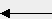
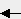
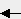
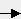
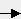

Esc
F1
F2
F3
F4
F5
F6
F7
F8
F9
F10
F11
F12
Impr
Pant Bloq
Des Pausa Bloq
Num Bloq
Mayus Bloq
Des
Pant Bloq
Des Pausa Bloq
Num Bloq
Mayus Bloq
Des

Insert
Inicio
Re
Pag Bloq
Num / * -
Pag Bloq
Num / * -
Pag 7
Inicio 8
9
RePag +
Bloq Mayus
4
 5
6
5
6

<
Fin 2
AvPag Enter
Ctrl
Alt
Alt Gr
 Ctrl

Ctrl

 
0

0
Ins .
Supr
Ins .
Supr